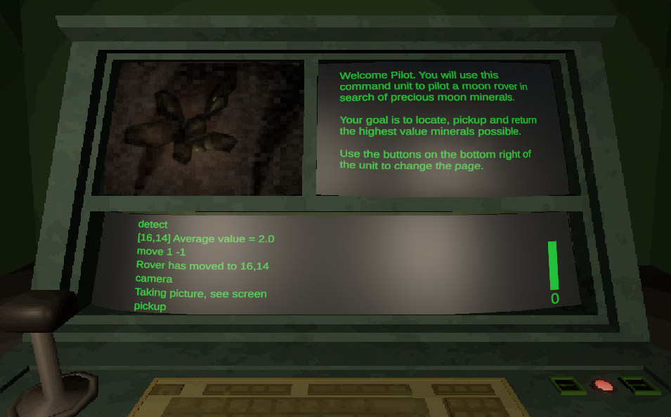
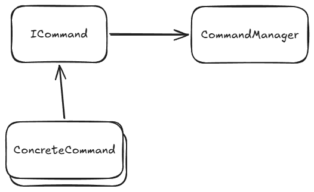
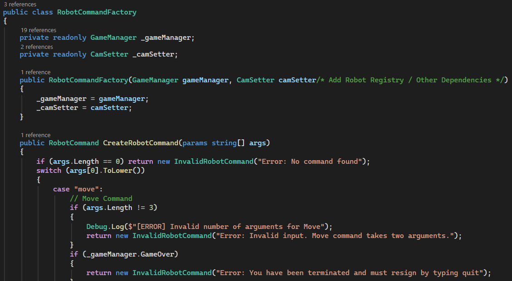
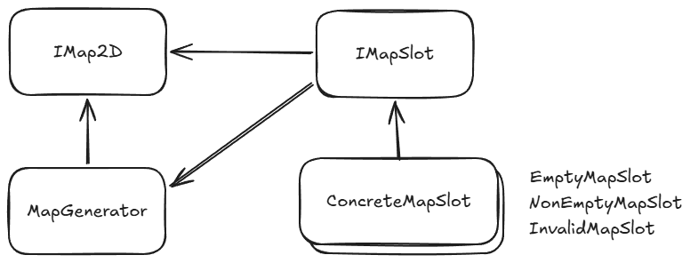
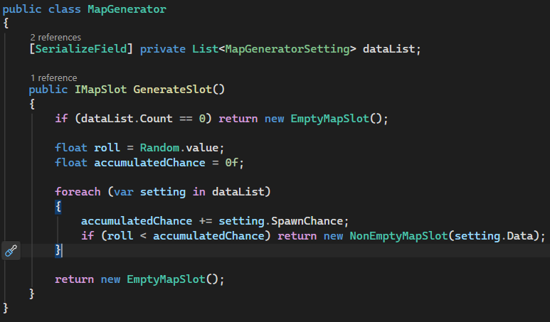
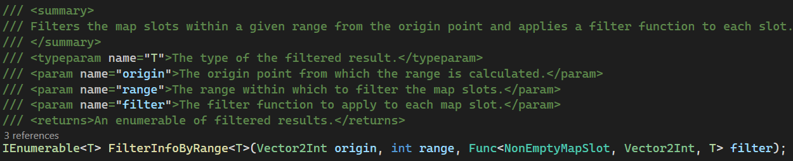
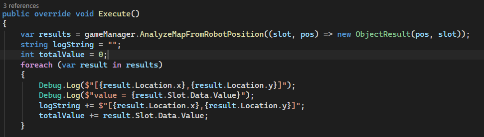
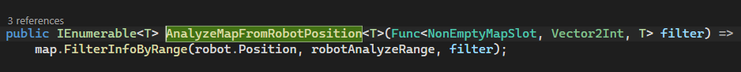
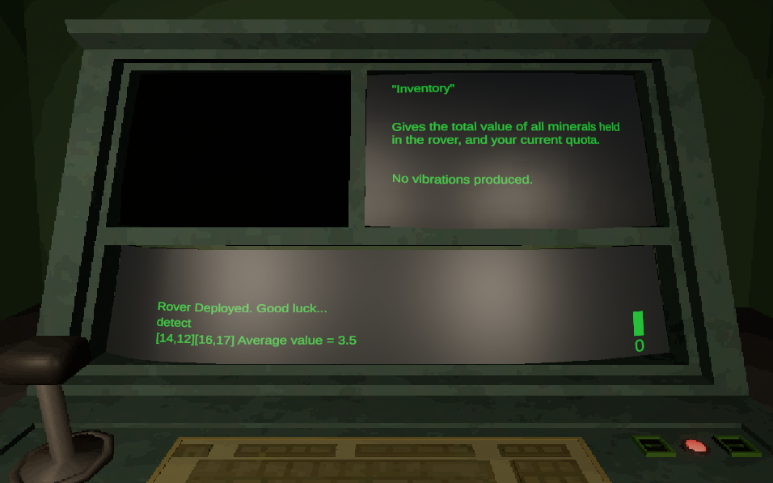

This game was made in the Unity Engine in less then 7 days for the Brackeys 2026.2 Game Jam. You play as an operator at a command line terminal, giving commands to a rover on the moon, where you need to collect valuable rocks. Some rocks are infected, however. If you pickup an infected rock, your rover will start losing health on every command. Some commands also increase the chance of a rock getting infected. Get as many rocks as you can before the infection takes control.
My Contributions
I participated in the game's development as a programmer where I implemented the command system, the map design, and the infection system.

Command System (Pt. 1)
When entering a command in the terminal, the player creates a command object to send to the command manager. The commands objects are created with an interface called "ICommand". When receiving a command object, the command manager executes the command, then connects to the terminal and prints the results.

Command System (Pt. 2)
To parse the terminal commands into command object, I made a command factory. First, the factory obtains all dependecies it needs for more complex systems (Ex: Camera system). Second, the terminal command gets passed as an array of strings, labeled as arguments. Third, the command objects are then created by the factory based on what arguments have been passed.

Game Map (Pt. 1)
The map the robot interacts with is a 2D tile-based map. The concrete map implementation uses the "IMap2D" interface. The map tiles used the "IMapSlot" interface. The "MapGenerator" class makes sure each type of rock you can find is fairly distributed on the map using Pseudo-Random Distribution.


Game Map (Pt. 2)
The IMap2D interface has a filtering method that searches for any point of interest on the map in a certain range and a certain point. When finding a point of interest, the method returns the data found and its position inside a callback method. Within that callback method, the user can parse the data found.

Game Map (Pt. 3)
In this example, in the "DetectCommand" class, we want to search all rocks in the vicinity of the robot and log their location. By using the map's filtering method, we can put the data in a wrapper object. The method then returns a list of that wrapper object to use for future operations in the command execution.



Infection System (Pt. 1)
When inputing certain commands in the terminal (Ex: "pickup", "camera"), the infection meter at the bottom right of the terminal will go up. Once the meter is full, a random rock on the map will become infected. The meter will then reset and show the number of infected rocks a the bottom.
Infection System (Pt. 2)
When the robot picks up an infected rock, it will start taking gradual damage for every future command. The more infected rocks you collect, the more damage you take every command.
Infection System (Pt. 3)
Here is the infection cowntdown class, which serves as a timer for when an infection should happen. The "CanInfect" method is used to determine if the infection theshold has been reached, if it has, then the robot's infection level should rise.